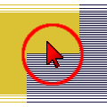

|
 |
| Descrizione |
|---|
| Attivazione/disattivazione della visualizzazione di tutti gli oggetti non selezionati (nascosti o non visualizzati). Gli oggetti selezionati in un documento vengono resi visibili, mentre quelli non selezionati vengono resi invisibili. Se non è selezionato alcun oggetto, tutti gli oggetti vengono nascosti. Se tutti gli oggetti sono selezionati, tutti gli oggetti vengono resi visibili. Versione macro: 00.02 Ultima modifica: 2015-11-12 Versione FreeCAD: All Download: ToolBar Icon Autore: Mario52 |
| Autore |
| Mario52 |
| Download |
| ToolBar Icon |
| Link |
| Raccolta di macro Come installare le macro Personalizzare la toolbar |
| Versione macro |
| 00.02 |
| Data ultima modifica |
| 2015-11-12 |
| Versioni di FreeCAD |
| All |
| Scorciatoia |
| Nessuna |
| Vedere anche |
| Macro Toggle Visibility2 1-2 Macro Toggle Visibility2 2-2 Macro VisibleAlls Macro HiddenAlls Macro If Selected Stay If Not Then Delete |
Gli oggetti selezionati in un documento vengono resi visibili, mentre quelli non selezionati vengono resi invisibili.
Copiare la macro e l'icona nella cartella delle macro ed eseguirla (vedere Come installare le macro)
Using the selection of objects in the one of the FreeCAD views, this macro makes all selected objects visible and hides all objects which are not selected.
Se non ci sono oggetti selezionati tutti gli oggetti vengono nascosti
Se tutti gli oggetti sono nascosti e nella Vista Combinata non ci sono oggetti selezionati, rende visibili tutti gli oggetti
La nuova versione (00.02) comprende le tre macro in una
Macro_ToggleSelectedObjectVisibility.FCMacro
import FreeCAD
# Macro_ToggleSelectedObjectVisibility
__title__="Macro_ToggleSelectedObjectVisibility"
__author__ = "Mario52"
__url__ = "https://freecad.org/index-fr.html"
__version__ = "00.02"
__date__ = "12/11/2015"
try:
compt = 0
for ShapeNameObj in FreeCAD.ActiveDocument.Objects: # list alls objet for test if alls hidden
if (FreeCADGui.ActiveDocument.getObject(ShapeNameObj.Name).Visibility == False) and (Gui.Selection.isSelected(ShapeNameObj) == False):
compt += 1 # if hidden : compt += 1
#print "False : ",ShapeNameObj.Name
if compt == len(FreeCAD.ActiveDocument.Objects): # if (compt = Alls objects hidden) then Visibility = True
for ShapeNameObj in FreeCAD.ActiveDocument.Objects:
FreeCADGui.ActiveDocument.getObject(ShapeNameObj.Name).Visibility = True # Visibility = True
#print "True : ",ShapeNameObj.Name
compt = 0
else :
for ShapeNameObj in FreeCAD.ActiveDocument.Objects: # hidde objects not selecteds
if Gui.Selection.isSelected(ShapeNameObj) == False:
FreeCADGui.ActiveDocument.getObject(ShapeNameObj.Name).Visibility = False # if objects is not selected then Visibility = False (Hidden)
#print "False : ",ShapeNameObj.Name
else:
FreeCADGui.ActiveDocument.getObject(ShapeNameObj.Name).Visibility = True # if objects are hidden and selected then Visibility = True and hidden alls objects visibles
#print "True : ",ShapeNameObj.Name
except Exception:
None
La discussione nel forum Proposal: select one or more pieces, hide the others.
The discussion on the forum Proposal: select one or more pieces, hide the others.
ver 00.02 12/11/2015 macro Macro_SelectVisible : hidden the objects not selected, if not object selected displayed all objects, hidden all objects. This version include the tree macro in one
ver 00.02 12/11/2015 macro Macro_SelectVisible : hidden the objects not selected, if not object selected displayed all objects, hidden all objects. This version includes the three macros in one
{kind=link}
{kind=link}